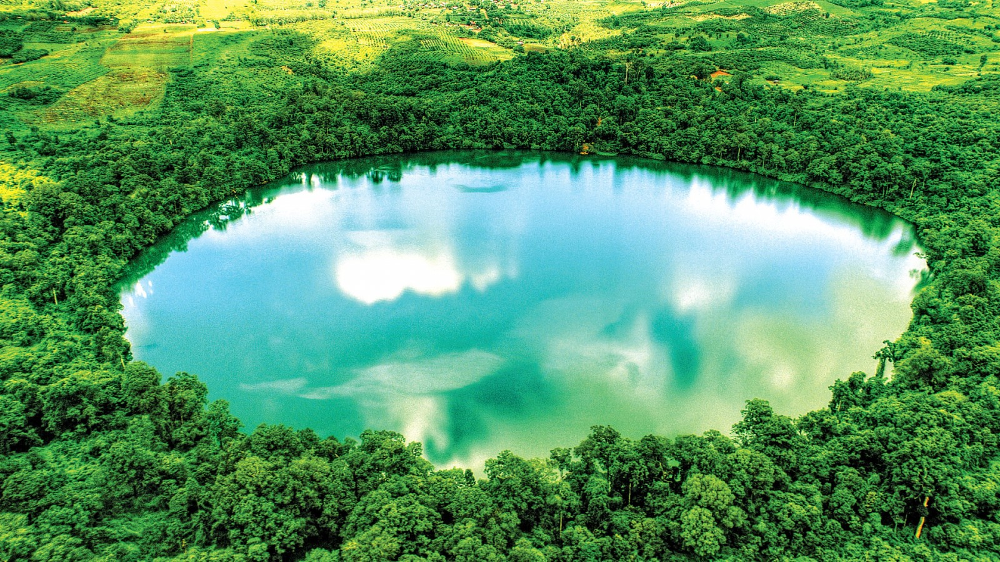

Rattanakiri has long been occupied by many separate highland Khmer Loeu hill tribes; some of which has little contact with the rest of the world and still maintaining much of their own traditions. Overall, this frontier province is renowned for her unique natural beauty and wealth of natural resources. The physical and environmental characteristics form an impressive range of intriguing destinations for eco-tourism; they include undulating hills and mountains, a level plateau, watershed lowlands, clear crater lakes, rivers and beautiful waterfalls.
Today, although rapid development in the province has altered some traditional ways of life, this remains a very interesting destination for the adventurous and eco-tourism traveller. There are numerous waterfalls in this remote region; a few of which are popular picnic locations that attract visitors even during the dry season. The idyllic Ou’Sinlair waterfall, is one of the popular locations offering wonderful opportunities for eco-tourism. The area is covered by the emerald forest and surrounding mountains. This waterfall is located in the Lum Phat district, just 30km south-west of Banlung. Ka Chanh waterfall, located about 7 kilometers southeast of Banlung provincial town, is a 12 meters high waterfall fed year round by the O’Kan Teung stream. Its water flows into Sre Pok River where bamboo-rafting is a popular tourist activity. The waterfall was given its name by the Kreung ethnic minority in Ka Chanh village. Ka Tieng waterfall is located 7 kilometers south-west of Banlung Town. The waterfall is about 10 meters high; the water is clear and falls throughout the year enhancing the beautiful landscape of the area. The Cha Ong waterfall, the most visited of the waterfalls around Ban Lung is probably so also because of the beautiful undulating landscapes on the way to this waterfall. Cha Ong Waterfall is located about 8 kilometres west from the center of Banlung. The source of this waterfall is from the Svay Mountain where the reclining Buddha at Wat Eisey Patamak is located. The waterfall falls over a cave-like pitch where visitors can watch the waterfall from behind and enjoy a spray of cool mist caused by the wind. Yeak Laom, the Lake featured here, is located about 5 kilo-meters southeast of central Banlung. This is basically a volcanic crater formed after a volcanic eruption 4,000 years ago; the diameter of the lake is about 800 meters and it bears about 50 meters of clear water. At one end, there are two wooden platforms for tourists to view the lake up close, but some people cannot resist a dip to feel the warmth of the water for themselves. A path surrounds the lake, providing a leisurely track for trekking; a walk around the lake takes around forty minutes. Midway along the track, at the western end of the lake, a small visitor center exhibits and sells handicrafts made by the indegenous locals. Visitors can buy musical instruments, crossbows, baskets, scarves and handbags made from hand-woven cloth. Virachey National Park, one of the most important areas for conservation in south east Asia, covers an area of 3,325 km2 and is one of two national parks in Cambodia that is protected by the ASEAN Heritage Parks organisation. Virachey has one of the more organised ecotourism programs in Cambodia, focusing on small-scale culture, nature and adventure trekking programs aim to involve and benefit local minority communities. Indulge in a thrilling bamboo rafting adventure. Glide along the river and into the forest of Virakchey National Park. This is an exciting and fulfilling adventures if you have never had bamboo rafting experience before